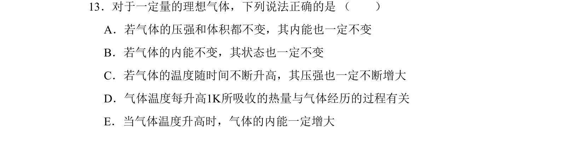
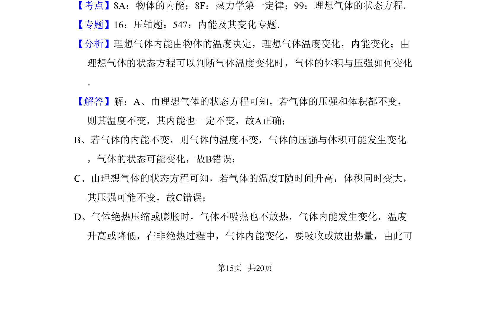
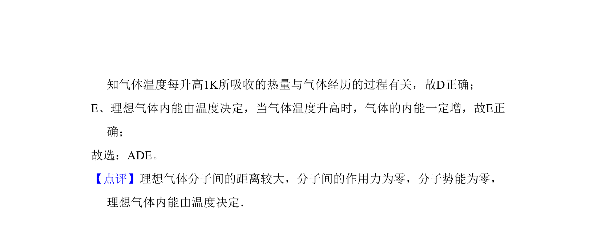

考点：理想气体状态方程 热力学第一定律 内能

考查理想气体状态方程、内能与热力学第一定律的综合判断。


📄 原 PDF 第 15 页：
素材/真题/吉林/2008-2024·（吉林）物理高考真题/2011年高考物理试卷（新课标）（解析卷）.pdf
13．对于一定量的理想气体，下列说法正确的是 （ ） A．若气体的压强和体积都不变，其内能也一定不变 B．若气体的内能不变，其状态也一定不变 C．若气体的温度随时间不断升高，其压强也一定不断增大 D．气体温度每升高1K所吸收的热量与气体经历的过程有关 E．当气体温度升高时，气体的内能一定增大
【考点】8A：物体的内能；8F：热力学第一定律；99：理想气体的状态方程．菁优网版权所有 【专题】16：压轴题；547：内能及其变化专题． 【分析】理想气体内能由物体的温度决定，理想气体温度变化，内能变化；由 理想气体的状态方程可以判断气体温度变化时，气体的体积与压强如何变化 ． 【解答】解：A、由理想气体的状态方程可知，若气体的压强和体积都不变， 则其温度不变，其内能也一定不变，故A正确； B、若气体的内能不变，则气体的温度不变，气体的压强与体积可能发生变化 ，气体的状态可能变化，故B错误； C、由理想气体的状态方程可知，若气体的温度T随时间升高，体积同时变大， 其压强可能不变，故C错误； D、气体绝热压缩或膨胀时，气体不吸热也不放热，气体内能发生变化，温度 升高或降低，在非绝热过程中，气体内能变化，要吸收或放出热量，由此可